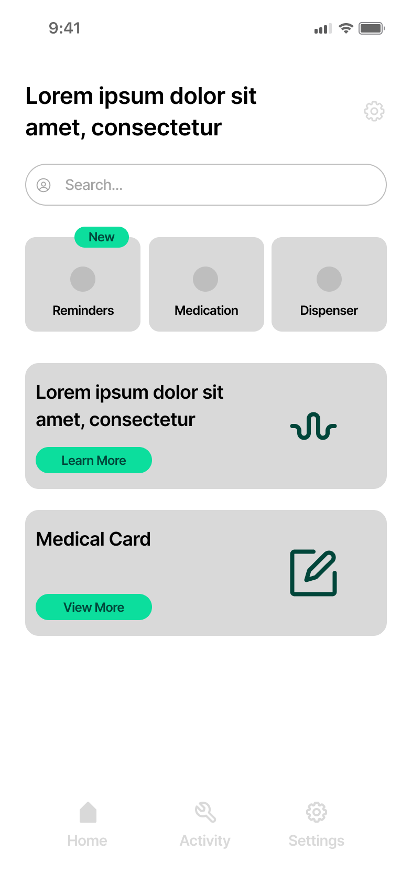
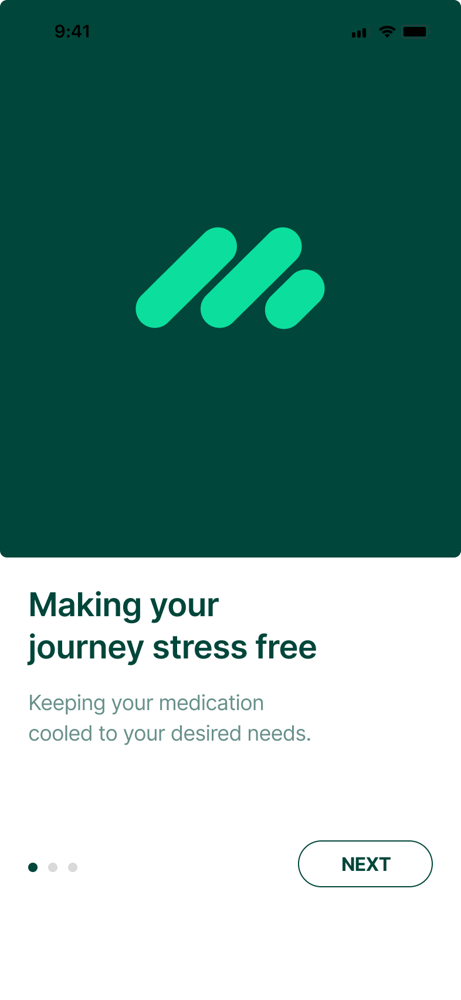
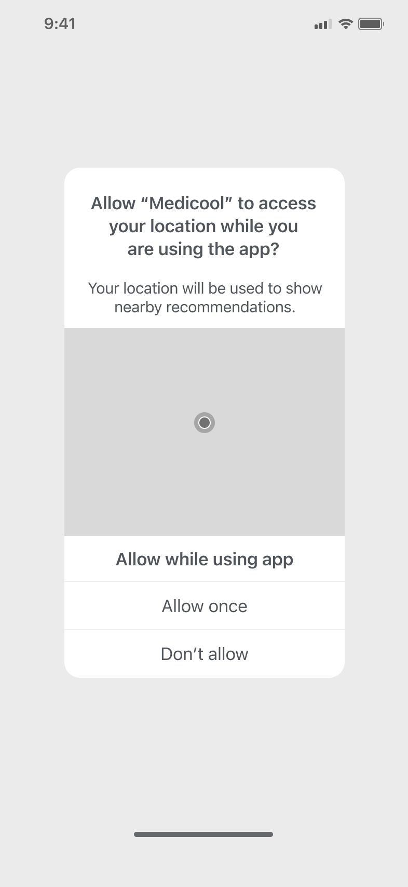

Selected projectsMedicool
Branding and designing the app for Medicool, a smart medication case
Programme
Catalyst Co-Founders 2023
Outcome
Selected for a £10k grant
My role
Branding and app UX/UI
Team
Four co-founders
The challenge
Catalyst’s Co-Founders is an early-stage entrepreneurship programme in Northern Ireland that brings people from different backgrounds together to build start-ups. In 2023 it focused on the UN’s Sustainable Development Goals, including good health and wellbeing.
Our team of four formed at the programme’s Hot House event: me on branding and the app, a CAD engineer, and the two researchers whose idea it was. People who rely on medication still need it when they’re away from home, but keeping it stored properly and remembering every dose gets harder on the move.
- The idea
- A physical case that stores medication on the go, and an app that talks to it to regulate the temperature, remind you about doses and more.
Who it’s for
We ran a target audience exercise as a team to agree who Medicool was for and what they needed from it.
- What they value: a reliable, trustworthy product they can understand and use easily.
- What gets in the way: keeping track of their medication, on top of storing it properly.
- What would win them over: simplicity and effectiveness. Engaging, but never overwhelming.
- Need or want: both. It takes away the worry of whether a dose was taken and whether the medication was stored well.
- Who else it could help: small businesses, hotels and Airbnbs, offering cooled storage to guests, with app reminders for people travelling abroad.
What was already out there
We looked at existing medication products and services, from automatic pill dispensers with alarms and lockable lids to pharmacy services that pre-pack each dose.
- Takeaway
- Most of what we found was designed for use at home. Medicool’s angle was medication on the move.
The brand
I designed the Medicool identity: a mark of three rounded strokes beside a bold wordmark, in a deep green with a bright mint accent. It had to feel calm and trustworthy, the qualities our audience said they valued most.

The case
Alongside the app, the team worked through what the physical product needed to be. It had to be compact, easy to carry, and usable by people with reduced dexterity, without giving up security. Every bit of automation added cost, bulk and weight, so we weighed three versions.
- Manual. Loaded by hand, with the medication schedule set in the app. You dispense each dose when the app prompts you, with an optional lock.
- Semi-automatic. Still loaded by hand, but each dose is dispensed and recorded automatically, with an automatic lock.
- Fully automatic. Loading and dispensing both handled by the case. Not feasible at the time.


What the case needed to sense
- Its position: tilt switches to tell upright from upside down, and an accelerometer to know when it’s in transit.
- The dose: a load cell to confirm a pill is in the delivery pod.
- Its status at a glance: a red or green light, orange while busy, flashing white when a dose is ready, and blue when it’s connected to the app.
The app
I designed a lo-fi prototype of the app, the case’s control panel, to show how what we learned about our audience shaped the product.

- Simple by default. The audience wanted something effective but not overwhelming, so the home screen leads with three clear actions.
- Keeping track. Reminders show exactly what to take, when, and how far through a course you are.
- Trust. The medical card keeps allergies, conditions and intolerances together, ready when they’re needed.
- Light and dark. The home screen was designed in both modes, in the Medicool greens.


Outcome
We pitched Medicool at the programme’s Pitch Night, and it was one of ten teams, out of 18 that graduated, selected for a £10,000 proof-of-concept grant. We later had to withdraw, as some of the team were unable to continue.
Reflection
[Your reflection on Medicool, in your own words]
What I learned
[One line on what you took from the project]